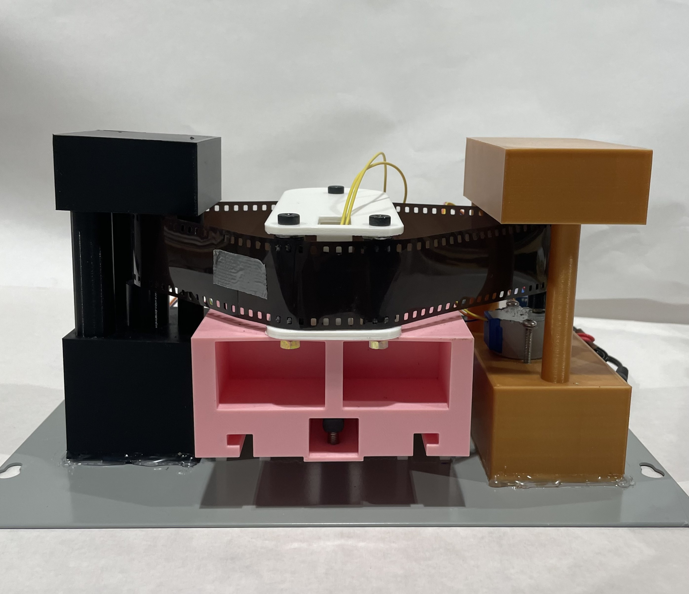
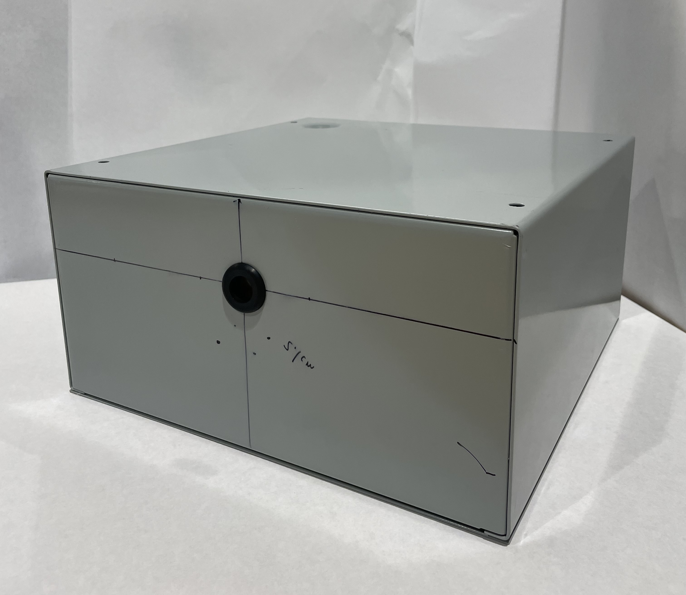

Event-Driven Animal Saliva Sampling Device
Embedded systems • Low-power design • Electromechanical sequencing

The Problem
Our team needed to design a saliva sampling device that could be deployed in the field and operate unattended for at least one month. The system needed to reliably collect discrete samples only when an animal interacted with the device, without wasting power while idle.
Unlike lab-based systems, this device had to assume long periods of inactivity, unpredictable user interaction, and no opportunity for manual intervention once deployed.
Constraints
- Operate unattended for 1 month on battery power
- No standby power draw during inactivity
- Repeatable, discrete sampling cycles
- Mechanically simple and robust for outdoor use
- Store 10 saliva papers (1cm by 1cm)
- Portable and compact (shoebox size)
In the making: An Always-On Controller
The initial design used a microcontroller running continuously and a limit swtich to detect contact events. While functional, this approach resulted in constant standby current draw and severely limited battery life. The limit switch was also inconsistently triggered upon attempted activation.
 Clearly, this was also not the size of a shoebox.
Final System
To eliminate standby power draw, we introduced a hardware wake circuit triggered by the FSR to physically gate power to the system. The microcontroller is completely unpowered until a contact event occurred. The system then latches its own power, executes one sampling cycle, and shuts itself down.
I packaged all electrical and mechanical subsystems into a polished and compact 210 x 180 x 140 mm metal enclosure designed for extended outdoor deployment. This housed all individual structures into one small and robust assembly.
Upon activation, the linear actuator integrated using a sliding rail that indexes a continuous sampling roll will retract. The stepper-motor that also indexes the sampling roll will rotate, allowing the next sample to be revealed before the linear actuator re-extracts.
- FSR-based hardware wake circuit (zero idle draw)
- Self-latching power control
- Deterministic actuator sequencing
- Validated across Arduino and ESP32 platforms


Continuing to work with the team, my next steps are to further reduce mechanical complexity and add on-device logging to improve post-deployment diagnostics.